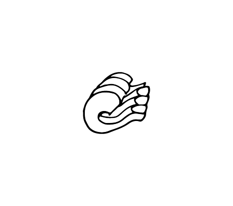

Discription:
Radiatori are small, squat pasta shapes that are said to resemble radiators. Although it is rumored that they were created in the 1960s by an industrial designer, their invention was actually between the First and Second World War. They are often used in similar dishes as rotelle or fusilli, because their shape works well with thicker sauces. They are also used in casseroles, salads, and soups.

-
begginermaster
-
smalllarg
-
shortlong